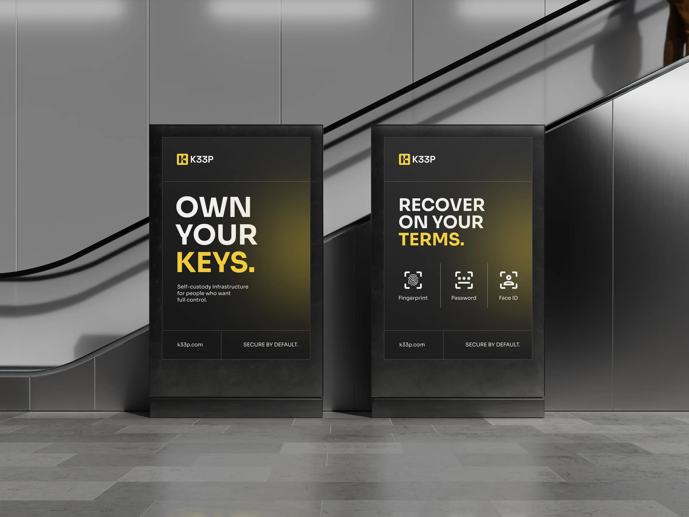
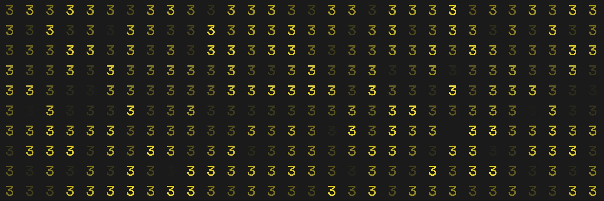
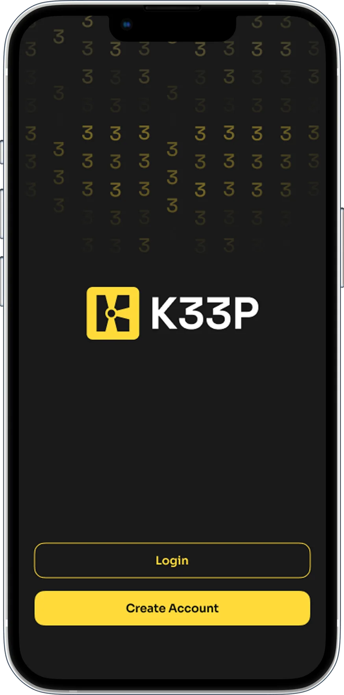
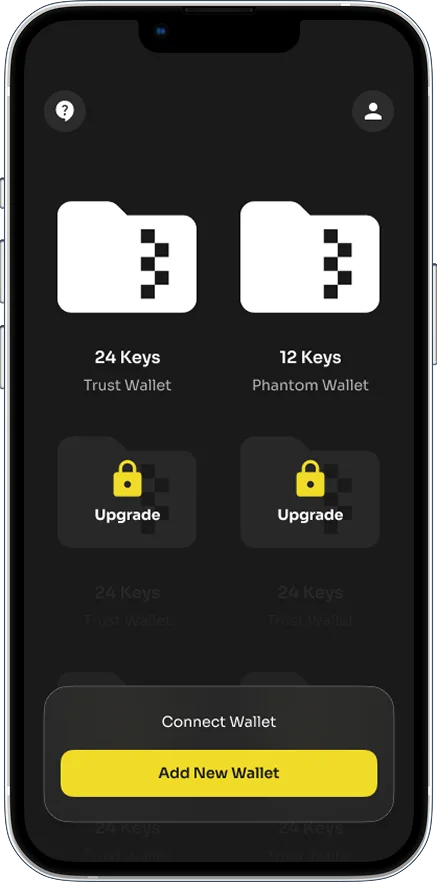
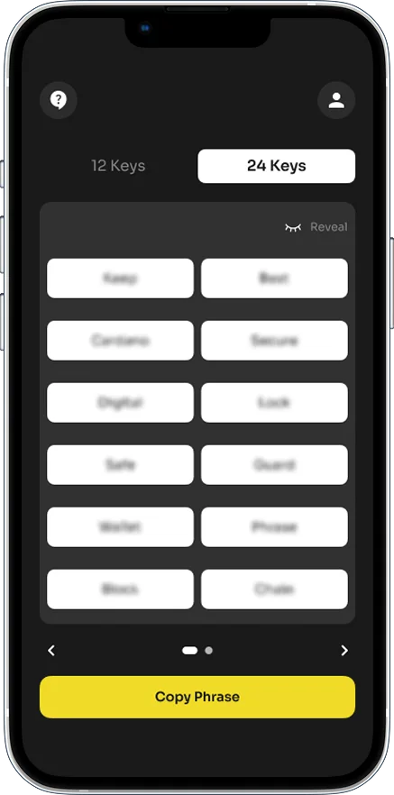
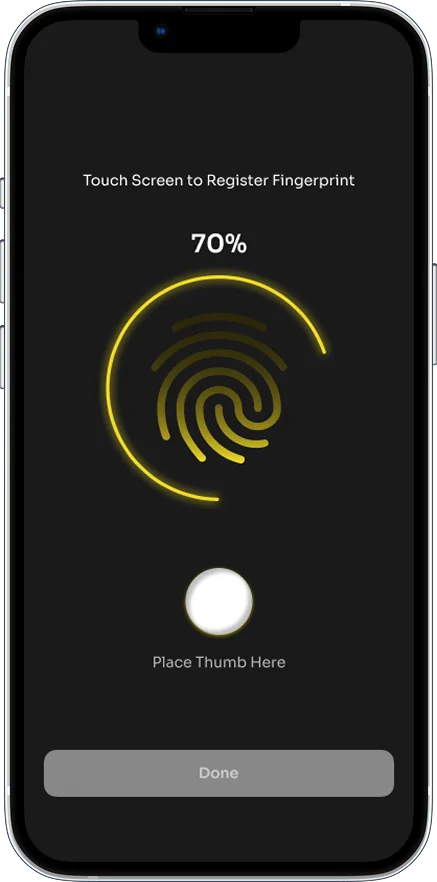
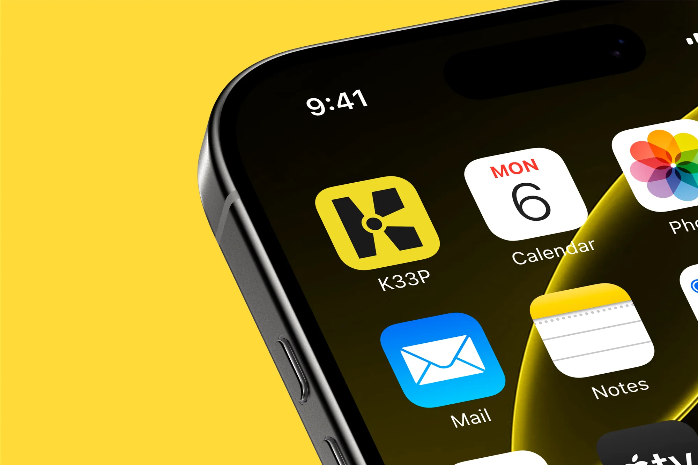
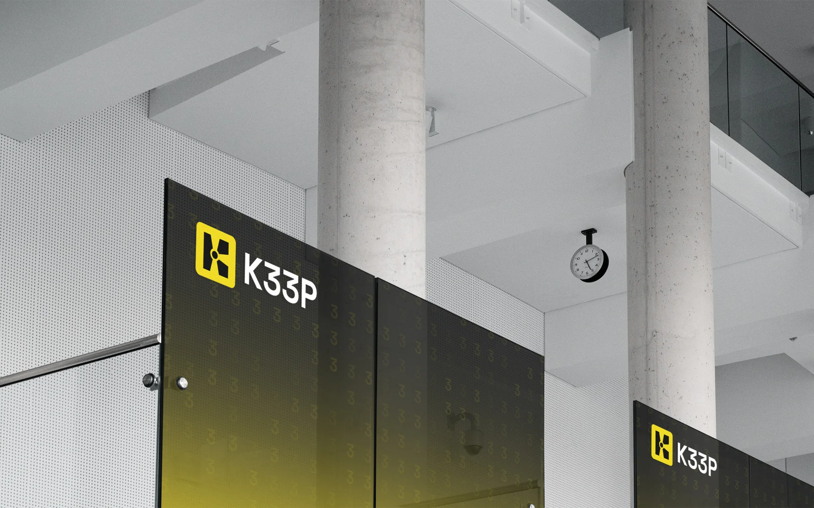
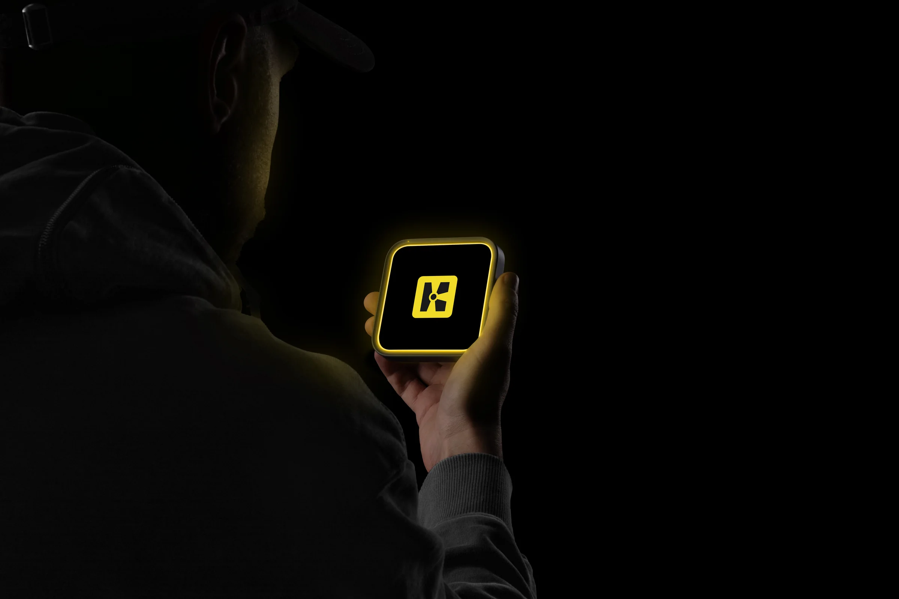
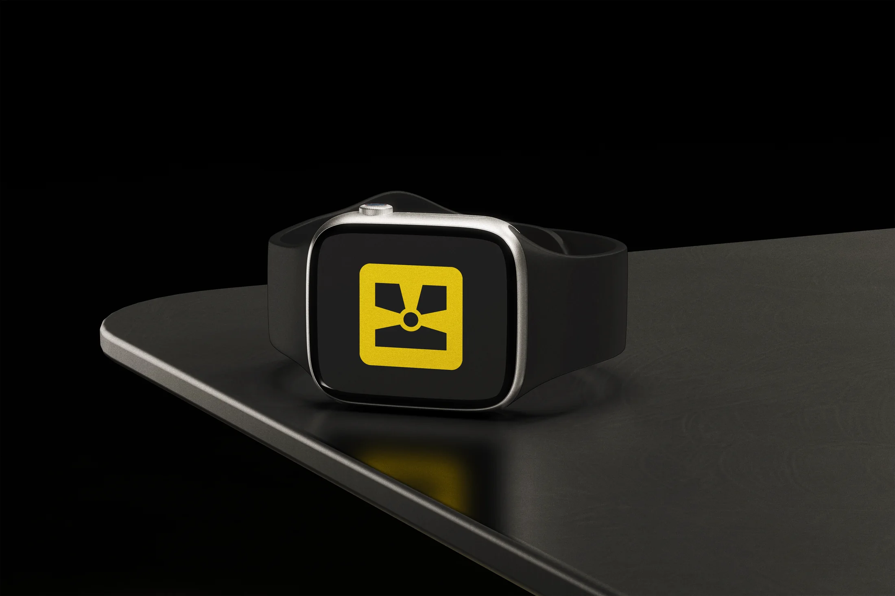

K33P
K33P is building a biometric recovery layer for self-custody. The brand had to explain a technical idea simply, feel secure without looking like a bank, and give the product a system it could grow with.
- Role
- Brand lead
Founding contributor
- Scope
- Positioning
Visual identity
- Deliverables
- Brand system
Product direction

People choose self-custody because they want control. That control also comes with responsibility: if a seed phrase is lost, access may be gone with it. K33P needed to make this problem understandable without making the product feel frightening or overly technical.
Security, without the usual visual clichés.
The mark is built from three keyholes. Together they form both a K and a vault-like mechanism, turning the product idea into something distinct and easy to recognise.

The high-contrast palette makes important actions easy to spot. Yellow carries the energy and recognition of the brand, while black and white keep instructions, recovery steps and product information direct.




The product direction carries the same logic into the interface: one clear action at a time, familiar language and enough visual emphasis to help people understand when a decision matters.





The result is a system that can move from a small product screen to a large physical space and still feel like the same brand: clear, direct and built around keeping control in the user’s hands.